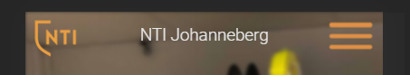

Jag kommer använda mig av grid, med en kolumn och ett flertal rows. Varje gridruta kommer vara en section där innehåll finns. Jag kommer även ha en header och footer. Jag vill dessutom ha en hamburgarmeny med en nav i. På undersidorna ska det finnas en header och ett liknande grid under (en kolumn) längst ner vill jag ha en section eller liknande.
Jag kommer använda mig av grid, med en kolumn och ett flertal rows. Varje gridruta kommer vara en section där innehåll finns. Jag kommer även ha en header och footer. Jag vill dessutom ha en hamburgarmeny med en nav i. På undersidorna ska det finnas en header och ett liknande grid under (en kolumn) längst ner vill jag ha en section eller liknande.
| Vecka | På lektionen | Utanför lektionen |
|---|---|---|
| 4 | Börja komma på och välja en ide som jag ska jobba med. Skriva i idebeskrivningen om den iden och senare rita en handskiss och beskriva den. Även skriva schemat och börja utföra det som står på schemat. Jag vill göra iordning mappstrukturen. | Fundera på detaljer jag vill implementera i hemsidan tills nästa lektion. |
| 5 | Starta strukturera upp html-dokumenten med grid och boxelement. Lägga in alla grundelement som behövs för sidorna och möjligtvis börja med css alltså utseende och design. Naturligtvis ska jag i slutet av denna och alla kommande lektioner commita och pusha till GitHub och dokumentera mitt arbete. | Om inte klar med html-strukturen och alla dess element ska jag göra klart det. |
| 6 | Jag vill fortsätta med styling på alla element och få sidan att likna mitt GSD-projekt så mycket som möjligt. | Fundera på hur jag ska lösa eventuella problem som uppstår i arbetets gång. Om jag känner att jag ligger lite efter i planeringen vill jag komma ifatt. |
| 7 | Lov | Lov, om jag inte ligger efter planeringen. |
| 8 | Implementera en hamburgermeny med nav med länkar till delar av hemsidan. Om jag hinner vill jag börja titta på hur jag kan spara och visa information mellan olika sidor, alltså funkionalitet till bokningssidorna. Kanske använda mig av "cookies" för att spara data lokalt. | Göra klart det jag inte hann. |
| 9 | Bli klar med funktionaliteten för hemsidan och eventuellt börja med nästa veckas planering. | Göra klart det jag inte hann. |
| 10 | Validera all kod. Göra tester på hemsidan på olika webbläsare och på mobil. Se till att allt fungerar som det ska på alla webbläsare. Göra tester på kontrast och färgblindhet. Börja skriva under rubriken Testning. | Göra klart det jag inte hann. |
| 11 | Bli klar med allt som skulle göras förra lektionen och skriva färdigt under rubriken Testning. Börja med att anpassa sidan för andra fönsterstorlekar än till mobil med hjälp av media queries. | Om jag känner att jag inte hinner bli klar med media queries-anpassning vill jag fortsätta jobba med det. |
| 12 | Bli helt klar med projektet och skriva under rubriken Utvärdering. Kolla viktiga saker, t.ex. att jag har tillräckligt små bildstorlekar. | Göra klart eventuellt arbete som inte blivit klart. |
Dagens uppgift var att implementera en hamburgermeny vid startsidan. Jag använde mig av ett gammalt projekt där jag gjort en hamburgermeny och jag kunde därför ganska lätt kopiera och klistra in kod. Det enda som behövde ändras var placeringen, storleken, och färger på själva hamburgarmenyn. Jag hade inte några problem med detta utan det gick bra. Ett problem som däremot uppstod var att när jag återigen testade hemsidan på mobilen skymde tab-baren en del av innehållet längst ner på sidan. Detta gjorde att "scrolla"-texten och bilden på en nedåtpekande pil inte syntes. Det är viktigt att de syns eftersom att man kanske inte annars vet vad man ska göra när man först kommer in på webbsidan. Jag sökte runt och försökte ta reda på hur man kunde minska fönsterhöjden så att inget skymdes men märkte att det var ett vanligt problem med komplicerade lösningar, varje med sina fördelar och nackdelar. Det enklaste var att flytta upp texten och bilden så att de säkerligen inte längre skymdes. Så här såg det ut innan förändringen respektive efter:
Som jag beskrev i dokumentation på första lektionen så händer oväntade saker. Idag skulle jag egentligen, enligt planeringen, göra tester och validera all kod. Men dagens lektion började med en genomgång och kamratrespons. Därför har jag idag istället fokuserat på feedback jag har fått och försökt förbättra sidan. Feedback jag fick var att det hade varit snyggare om nav-baren som dyker upp när man trycker på hamburger-menyn kom in från sidan istället för att den dök upp underifrån. Jag ändrade detta så att nav skjöts ut till höger när en annan klass "navActive" lades till på naven, med hjälp av "transform: translateX(100vw)". Feedback var också att jag skulle lägga till en länk till NTI Johannebergs hemsida. Jag lade till en bild som jag redigerat i photoshop (hittade en logga med genomskinlig bakgrund och ändrade färgen till orange, med hjälp av färgjustering) på motsatt sida om hamburgermenyn. Detta förbättrade dessutom symmetrin, eftersom jag har två liknande symboler på vardera sida på skärmen:
Nästa lektion ska jag istället testa webbläsare och göra tester. För att förbereda inför det laddar jag ner webbläsare jag ska testa på, t.ex. firefox.